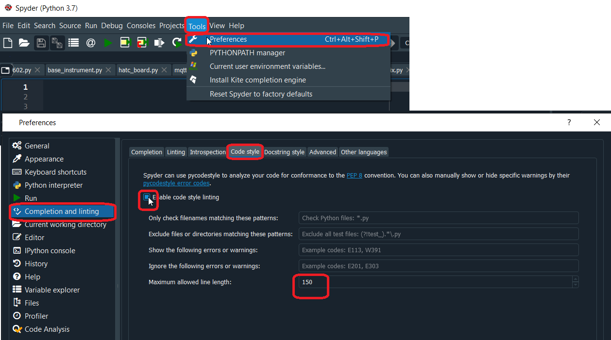
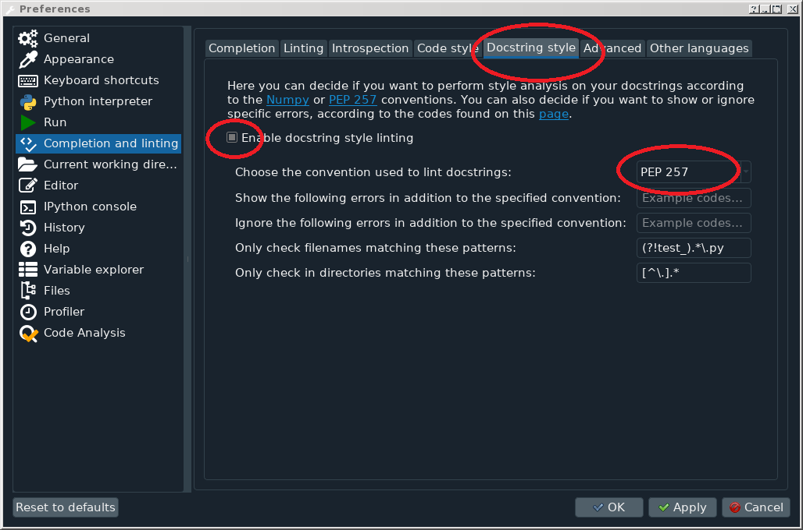

Last change: April 28, 2026
All contributors are welcome, but please adhere to the following rules :
Rules, Tips and Tricks
Here you will find rules, but also tips and tricks on how to create the documentation and how you should configure Spyder.
The documentation itself is based on Sphinx and the doc-strings inside the source code. For Sphinx use reStructuredText as its markup language. This quickreference can help you for beginning.
this documentation is automatically generated as soon as a push is executed in github. If you want to generate it by hand:
>>> conda activate 'your environment' >>> mamba install sphinx sphinx-rtd-theme myst-parser sphinx-markdown-tables >>> cd docs >>> ./make clean >>> ./make htmlall import modules have to be in the sys.path from the file conf.py . Otherwise you get a WARNING like :
WARNING: [autosummary] failed to import ‘instruments.attributes’: no module named instruments.attributes
and the module doesn’t compile.
Spyder Preferences
For the python code themselves, we use PEP8 as an uniform code styling. In the Spyder Framework, you have to enable the code style linting (the images show Spyder V4.0.x preferences):
{kind=link}

and you have to enable the docstring style linting
{kind=link}

If you think all the code styling is too much work and you don’t have time to learn it, then you can also use the Black program. For installing, open Maxiconda Powershell, go to your current TCC workarea and write:
>>> mamba install black >>> cd /instruments/your_path/.... >>> black your_file.pylook on the code now(attention, the file is overwritten), it’s now PEP8 style. However, the docstrings are not processed. You have to do it yourself…..
Rules for writing Tests
For file- and directory name use only lower case. Windows does not handle capitalized files correctly. In linux is ‘test.py’ and ‘Test.py’ two different file, but not in windows!
Use short function name. E.q. ‘off()’ and not ‘dmm_switch_off()’
Code is your enemy.
Avoid copy and paste.
IF you write new functions or libraries: Someone in the world may have already solved the same problem. Google is your friend! For libraries start your search e.q. at https://pypi.org/ and https://anaconda.org/